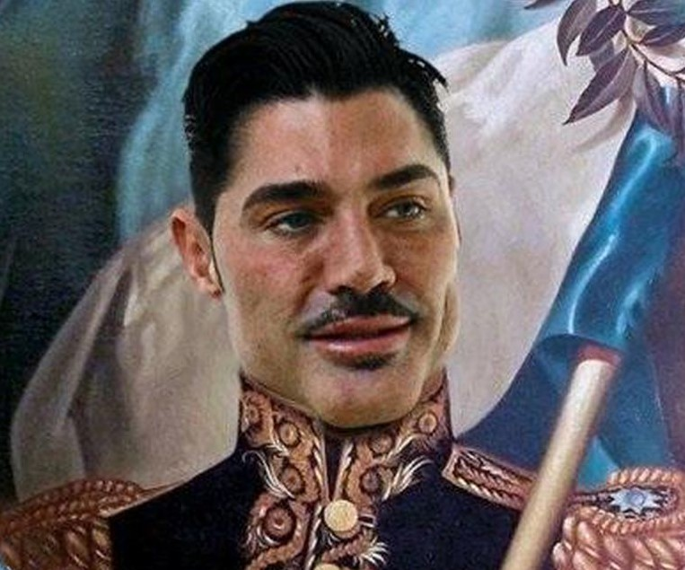

|  | El comandanteRicardo Anibal Fort (Buenos Aires, 5 de noviembre de 1968 - Palermo, Buenos Aires, Argentina, 25 de noviembre de 2013), fue un cantante, actor de teatro, televisión, presentador de televisión, productor de teatro, televisión y empresario industrial argentino. Con tan solo cuatro años de carrera, Fort fue una de las personalidades más famosas y populares de la televisión argentina. Personaje iconico de la television argentina Filosofo Guru Bodybuilder |
| Habilidades | |||
|---|---|---|---|
| Actuacion | 💪💪💪💪💪💪 | Canto | 💪💪💪💪💪 |
| Filosofia | 💪💪💪💪 | Fuerza | 💪💪💪💪💪 |